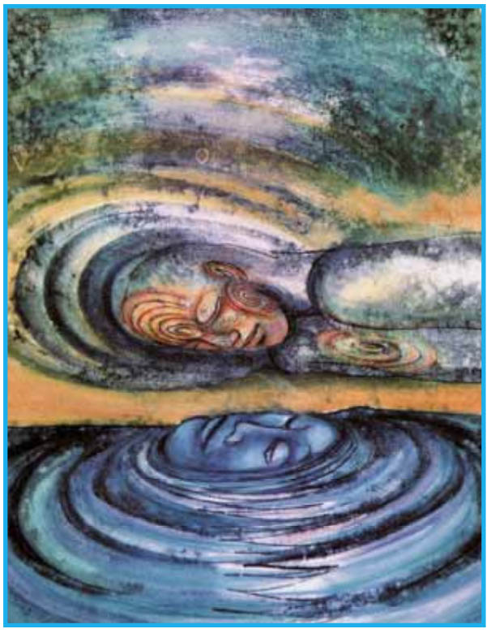

Let’s assume for a moment that Life is a dream. This means that we can use dream techniques on waking life events or situations. Go ahead. Try it:
Pick something from your everyday, waking life — say, an unexpected change in your job, or that near-miss on the freeway, or perhaps an emotionally charged encounter with someone — and take a step back to look at that event or situation ‘as if’ it were a dream or a scene from a dream. Apply your favorite dream tech-nique(s) to this event or situation. What do you notice? Now take another unusual waking life event or situation and look at that as if it were a dream. Now look at any waking life event or situation as if it were a dream.
How does the dream world show up in your waking life?
How do you know that you are NOT dreaming, right now?
When we work with our dreams, we have tools to enhance our everyday life—and to explore this dream we call ‘waking life’.
How do you work with dreams? What are your favorite techniques? However you look at dreams, use those tools to look at waking life. See the people, places, actions, emotions, etc. in a waking life event or situation as if it were a dream event or dream fragment. What do you notice? What do you see? What do you learn about yourself in this exercise? What do you learn about your relationship(s)? Your body? Your job? Your life’s calling? Your choices?
In the 1980’s, I spent hours each day/ week recording dreams and working with the dream tools and techniques I was learning. I incubated dream questions, intended lucid dream experiences, wrote about my dreams, read dream books, etc. In short, I immersed myself in the world of dreams and dove deep with the intention of dissolving the culturally-constructed barrier between waking life and dreaming life. Somewhere in all this dreamwork, I began to intentionally look at unusual or out of the ordinary waking life events and situations: a child’s doll, lost/discarded along a wet curb; an argument with a co-worker; found money; odd objects that caught my attention for some reason. What happened ‘woke me up’ more than I expected!
As anyone who works with dreams knows, the more attention one pays to dreams, the more detailed and vivid they can become. Coupled with a desire to become lucid while awake in consensus reality, this intensive dreamwork began to thin the veil between worlds. My waking life became richer and spoke to me in surprising and personally meaningful ways. My dream life became more alive. Using several methods to remind myself that I was dreaming (while sleeping and while awake), the pre-lucid and lucid dreams became more frequent. Then, one day, the dream-world appeared in waking-life reality—I literally walked into a recurring dream-image!
That day I went to a particular room I had been to several times before. Nothing was out of the ordinary on ‘this side’ of the door (no signs or announcements). However, when I opened the door, the room was obviously in the midst of significant remodeling— spaces that were normally private were completely exposed (!).
This room, this image, came from dreamtime and said, very clearly, ‘waking and dreaming are one.’ The world shifted, expanded, and I knew that if I crossed the thresh-hold and entered that room my life would not— could not—be the same. I wish I could say I eagerly stepped into the room. What I discovered instead was a strong attachment to my ‘ordinary’ (albeit uncomfortable) life. In that room, anything/everything was possible... but required more than I was willing to give up. I closed the door without entering the room.
Then the circumstances of my life began to change, leaving less time for intensive dreamwork. I was still connected to my dreams, however, and started my first dream group around that time.
I never quite let go of looking at waking life events and situations ‘as if’ they were dreams. One eye stayed open for dream images in waking life. I still draw on these concepts in dream groups and workshops. Sometimes I look back on that day, that choice, with the wistfulness of wishing I had been ‘braver’ at the time. Change continued, as it does, in steps large and small. Something profound had touched me, and although my life seemed safely ‘ordinary,’ my interest in non-ordinary reality and dreams gave it an unusual flavor. Now, years later, I seek again something like that room, to enter and take that leap, to consciously cross the thresh-hold, and actively embrace a non-ordinary life in which ‘waking and dreaming are one.’
Sometimes waking-life dreams are personal, circumstances surrounding a sudden head-dive and broken finger, for example. Even in the emergency room, I joked/talked with my friend, “If this were a dream, what would it be telling me?” Sometimes a waking dream includes others, as when several of us headed out of town to meet with another dreamworker, the driver had car trouble that stopped us in our tracks. The part(s) that failed held significance on several levels. And sometimes a waking dream is part of the collective psyche, as with Sept. 11 or hurricane Katrina.
Viewing the events and situations of waking life ‘as if’ they are dreams allows another, larger, dimension to open in our personal/collective world. We are not as separate from ourselves or from each other as some would have us believe. We are not alone and are not powerless in the face of disaster or tragedy. It is possible to see more of one’s self, and the world, with the help of these ‘waking dreams.’ Working with waking life events as dreams can help each of us become more conscious in our lives. As each person becomes more conscious (in interactions, choices, etc.), the world (and the world view) will, of necessity, change.
We are all connected. Life is a dream – a great big, collective, group dream. Let us wake up in our dreaming life. Let us wake up in our waking life.
Let us become conscious. Emerge from the cocoon. Let’s wake up. ℘